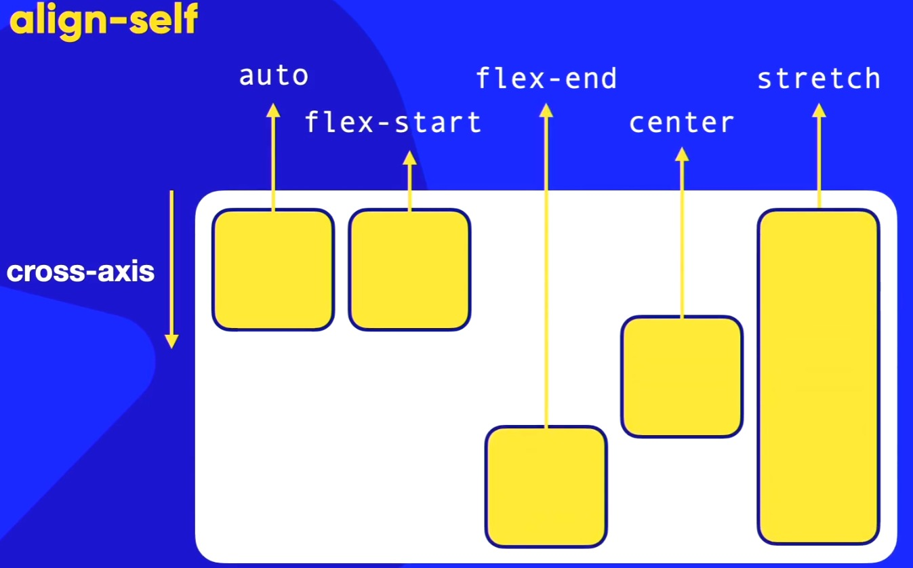

Exemplo A
Exemplo B
Exemplo C
Exemplo D
Exemplo E
Exemplo F
Exemplo G
Align-Self:
O align-self se aplica diretamente nos itens e ele vai funcionar diretamente no CROSS-AXIS(eixo transversal)!
O align-self tem 5 valores e são eles:
- auto;
- O valor auto; vem como padrão. Ao colocar o valor auto;, ele vai herdar a característica de alinhamento vertical do container(seu pai). Seja ele, o align-content ou o align-item. Ao colocarmos o valor
inherit(herdado)
, terá o mesmo significado que o valorauto
. - flex-Start;
- Alinhamento grudado no CROSS-START transversal.
- flex-End;
- Alinhamento grudado no CROSS-END transversal.
- center;
- Vai calcular o meio entre o CROSS-START e o CROSS-END e deixa-lo no meio.
- stretch;
- Ele vai ocupar o espaço inteiro do eixo transversal. Nesse caso, como ele está como flex-direction: row, o eixo transversal vai ser de cima para baixo!
Eis uma imagem para ilustrar melhor o conteúdo do align-self:

Ou seja, consigo alinhar cada item individualmente dentro da linha CROSS-AXIS (eixo transversal)!